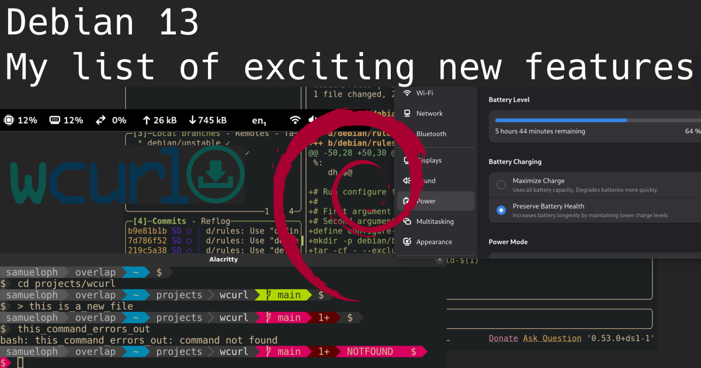
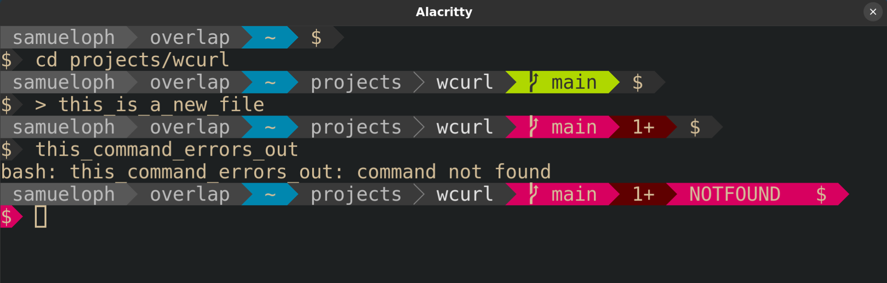
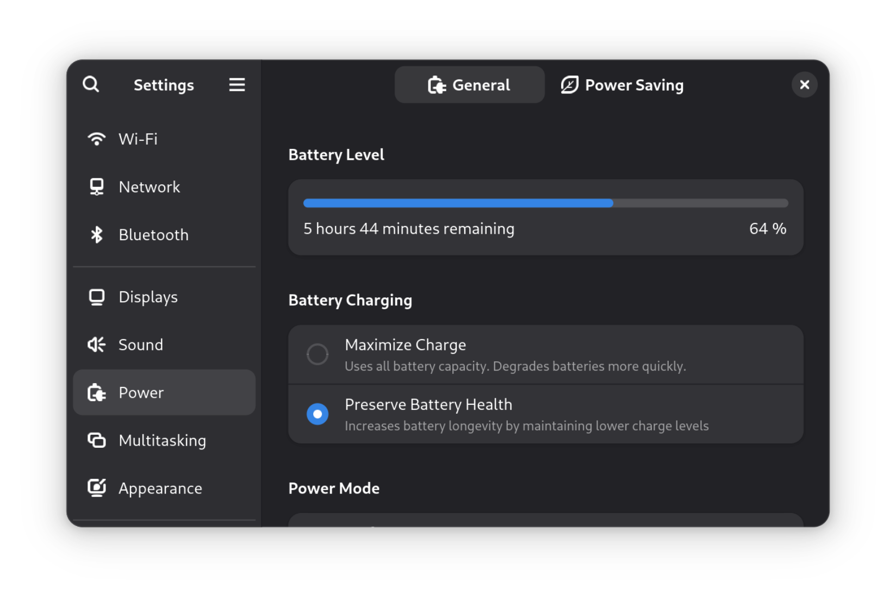

Debian 13: My list of exciting new features
Samuel Henrique (samueloph) August 28, 2025 [debian] Beyond Debian: Useful for other distros too
Every two years Debian releases a new major version of its Stable series, meaning the differences between consecutive Debian Stable releases represent two years of new developments both in Debian as an organization and its native packages, but also in all other packages which are also shipped by other distributions (which are getting into this new Stable release).
If you're not paying close attention to everything that's going on all the time in the Linux world, you miss a lot of the nice new features and tools. It's common for people to only realize there's a cool new trick available only years after it was first introduced.
Given these considerations, the tips that I'm describing will eventually be available in whatever other distribution you use, be it because it's a Debian derivative or because it just got the same feature from the upstream project.
I'm not going to list "passive" features (as good as they can be), the focus here is on new features that might change how you configure and use your machine, with a mix between productivity and performance.
Debian 13 - Trixie
I have been a Debian Testing user for longer than 10 years now (and I recommend it for non-server users), so I'm not usually keeping track of all the cool features arriving in the new Stable releases because I'm continuously receiving them through the Debian Testing rolling release.
Nonetheless, as a Debian Developer I'm in a good position to point out the ones I can remember. I would also like other Debian Developers to do the same as I'm sure I would learn something new.
The Debian 13 release notes contain a "What's new" section , which lists the first two items here and a few other things, in other words, take my list as an addition to the release notes.
Debian 13 was released on 2025-08-09, and these are nice things you shouldn't miss in the new release, with a bonus one not tied to the Debian 13 release.
1) wcurl
Have you ever had to download a file from your terminal using curl and didn't remember the parameters needed? I did.
Nowadays you can use wcurl; "a command line tool which lets you download URLs
without having to remember any parameters."
Simply call wcurl with one or more URLs as parameters and it will download
all of them in parallel, performing retries, choosing the correct output file
name, following redirects, and more.
Try it out:
wcurl comes installed as part of the curl package on Debian 13 and in any other
distribution you can imagine, starting with curl 8.14.0.
I've written more about wcurl in its release announcement and I've done a lightning talk presentation in DebConf24, which is linked in the release announcement.
2) HTTP/3 support in curl
Debian has become the first stable Linux distribution to ship curl with support for HTTP/3. I've written about this in July 2024, when we first enabled it. Note that we first switched the curl CLI to GnuTLS, but then ended up releasing the curl CLI linked with OpenSSL (as support arrived later).
Debian was the first stable Linux distro to enable it, and within rolling-release-based distros; Gentoo enabled it first in their non-default flavor of the package and Arch Linux did it three months before we pushed it to Debian Unstable/Testing/Stable-backports, kudos to them!
HTTP/3 is not used by default by the curl CLI, you have to enable it with
--http3 or --http3-only.
Try it out:
3) systemd soft-reboot
Starting with systemd v254, there's a new soft-reboot option, it's an
userspace-only reboot, much faster than a full reboot if you don't need to
reboot the kernel.
You can read the announcement from the systemd v254 GitHub release
Try it out:
# This will reboot your machine!
4) apt --update
Are you tired of being required to run sudo apt update just before sudo apt upgrade or sudo apt install $PACKAGE? So am I!
The new --update option lets you do both things in a single command:
I love this, but it's still not yet where it should be, fingers crossed for a
simple apt upgrade to behave like other package managers by updating its
cache as part of the task, maybe in Debian 14?
Try it out:
# The order doesn't matter
This is especially handy for container usage, where you have to update the apt cache before installing anything, for example:
5) powerline-go
powerline-go is a powerline-style prompt written in Golang, so it's much more
performant than its Python alternative powerline.
powerline-style prompts are quite useful to show things like the current status of the git repo in your working directory, exit code of the previous command, presence of jobs in the background, whether or not you're in an ssh session, and more.
Try it out:
Then add this to your .bashrc:
if [ && [; then
PROMPT_COMMAND="_update_ps1; "
fi
Or this to .zshrc:
If you'd like to have your prompt start in a newline, like I have in the
screenshot above, you just need to set -newline in the powerline-go
invocation in your .bashrc/.zshrc.
6) Gnome System Monitor Extension
Tips number 6 and 7 are for Gnome users.
Gnome is now shipping a system monitor extension which lets you get a glance of the current load of your machine from the top bar.
I've found this quite useful for machines where I'm required to install third-party monitoring software that tends to randomly consume more resources than it should. If I feel like my machine is struggling, I can quickly glance at its load to verify if it's getting overloaded by some process.
The extension is not as complete as system-monitor-next, not showing temperatures or histograms, but at least it's officially part of Gnome, easy to install and supported by them.
Try it out:
And then enable the extension from the "Extension Manager" application.
7) Gnome setting for battery charging profile
After having to learn more about batteries in order to get into FPV drones, I've come to have a bigger appreciation for solutions that minimize the inevitable loss of capacity that accrues over time.
There's now a "Battery Charging" setting (under the "Power") section which lets you choose between two different profiles: "Maximize Charge" and "Preserve Battery Health".
On supported laptops, this setting is an easy way to set thresholds for when
charging should start and stop, just like you could do it with the tlp package,
but now from the Gnome settings.
To increase the longevity of my laptop battery, I always keep it at "Preserve Battery Health" unless I'm traveling.
What I would like to see next is support for choosing different "Power Modes" based on whether the laptop is plugged-in, and based on the battery charge percentage.
There's a GNOME issue tracking this feature, but there's some pushback on whether this is the right thing to expose to users.
In the meantime, there are some workarounds mentioned in that issue which people who really want this feature can follow.
If you would like to learn more about batteries; Battery University is a great starting point, besides getting into FPV drones and being forced to handle batteries without a Battery Management System (BMS).
And if by any chance this sparks your interest in FPV drones, Joshua Bardwell's YouTube channel is a great resource: @JoshuaBardwell.
8) Lazygit
Emacs users are already familiar with the legendary magit; a terminal-based
UI for git.
Lazygit is an alternative for non-emacs users, you can integrate it with neovim or just use it directly.
I'm still playing with lazygit and haven't integrated it into my workflows,
but so far it has been a pleasant experience.
You should check out the demos from the lazygit GitHub page.
Try it out:
And then call lazygit from within a git repository.
9) neovim
neovim has been shipped in Debian since 2016, but upstream has been doing a lot of work to improve the experience out-of-the-box in the last couple of years.
If you're a neovim poweruser, you're likely not installing it from the official repositories, but for those that are, Debian 13 comes with version 0.10.4, which brings the following improvements compared to the version in Debian 12:
-
Treesitter support for C, Lua, Markdown, with the possibility of adding any other languages as needed;
-
Better spellchecking due to treesitter integration (spellsitter);
-
Mouse support enabled by default;
-
Commenting support out-of-the-box;
Check
:h commentingfor details, but the tl;dr is that you can usegccto comment the current line andgcto comment the current selection. -
OSC52 support.
Especially handy for those using neovim over an ssh connection, this protocol lets you copy something from within the neovim process into the clipboard of the machine you're using to connect through ssh. In other words, you can copy from neovim running in a host over ssh and paste it in the "outside" machine.
10) [Bonus] Running old Debian releases
The bonus tip is not specific to the Debian 13 release, but something I've
recently learned in the #debian-devel IRC channel.
Did you know there are usable container images for all past Debian releases? I'm not talking "past" as in "some of the older releases", I'm talking past as in "literally every Debian release, including the very first one".
Tianon Gravi "tianon" is the Debian Developer responsible for making this happen, kudos to him!
There's a small gotcha that the releases Buzz (1.1) and Rex (1.2) require a
32-bit host, otherwise you will get the error Out of virtual memory!, but
starting with Bo (1.3) all should work in amd64/arm64.
Try it out:
Don't be surprised when noticing that apt/apt-get is not available inside the
container, that's because apt first appeared in Debian Slink (2.1).
Changes since publication
2025-08-30
- Mention that Arch also enabled HTTP/3.